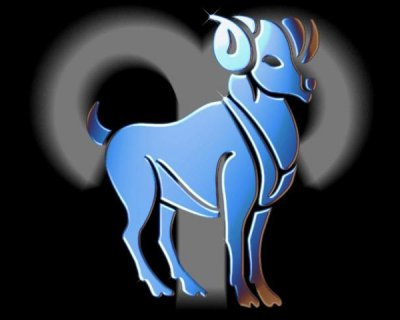

(21 Mart-19 Nisan)
KOÇ KIZLARI Son günlerde istemediğiniz bir şeyi size zorla yaptıran oldu mu? Sizi hayretler içinde bırakan, dudaklarınızı uçurtan ve bir o kadar mutlu eden. O kişi kesinlikle Koç kızıdır. Koç burçlar dünyasının ilk yıldızıdır. O büyümeyen bir bebektir. Kendi ihtiyaçları önceden gelir. Kim küçük bir bebeğe bencil diyebilir ki.. Çünkü o, kimseye rahatsızlık verdiğinin farkında bile değildir. Önemli olan kendisinin ne istediğidir. Sizin isteklerinizi sormayacak kadar bebeksi bir düşünce içindedir. Onda karışık bir şey yoktur. Karşınızda gördüğünüz kişi aslında odur.. Tek silahı korkusuzluğu ve saflığıdır. Yapmak istemediği bir şey için zorlayamazsınız. Hele emir vermeye kalkmak dünyada yapacağınız en son şey olmalıdır. Anında tepki verir. Çok çabuk kırılır. Hareket ve sözleri sertleşir. Hatta zorbalaşabilir. Onda incelik ve zarafet aramayın. Sizi utandırır. Kendisi aldırmaz. Eleştiricidir. Oldukça gururludur. Çocuk kalbi çok çabuk kırılır ve anında küser. Konuştuğu zaman onu dinleyin. Ondan ne beklediğinizi bilirse, sizi memnun etmek için canla başla çalışacaktır. Unutmayın ki, onun hayal gücünün gelişmesi için yardımınıza çok ihtiyacı vardır. KOÇ KIZIMIZ PARTİ HAVASINDA Katıldığı her partiyi bir ışık çemberi haline getirir. Kapıdan göründükleri anda, çevresindeki kişilerin derinden bir OH çekmelerine neden olur ve partinin havasını bir anda değiştirir.. Bu kızın enerjisi sayesinde ortam bir anda aydınlanır.. Dantelli mini eteği, üzerinizde kışkırtıcı ipek bluzu, ve yüksek topuklu ayakkabılarıyla bir çok erkeğin yüreklerini hoplatırken, hemcinslerinin de gizli kıskançlıklarına hedef olurlar.. Öylesine fütursuz ve kendilerinden emindirler ki, ortamın en yakışıklı delikanlısı hemen onlara yaklaşır.. Baharat kokulu parfümleri bir anda bulundukları alana yayılırken, onlar, kazandıkları zaferin tadını çıkarmaya başlamışlardır bile. Doğal cazibelerinin farkında oluşları kibir ve gururlu taraflarını körüklese de, hiçbir şeye aldırmadan gecenin ilerleyen saatlerine kadar eğlenirler. Uyku sorunları yoktur ve geç saatlere kadar partide kalmaya devam ederler ve kendilerini merak eden ailesine de hesap vermek istemezler. Bir Aslan, Yay ve Kova duygusal anlamda Koç’tan etkilenirken, İkizlerle hararetli bir tartışma ve konuşma alanı yaratabilir, yeni bir dostluğun filizlerini atabilirsiniz.